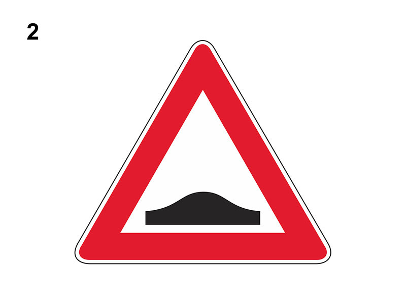

Dosso

E' un segnale di pericolo che preannuncia (di norma a 150 metri) un dosso (una salita, seguita da una discesa), ossia un tratto di strada con variazione di pendenza pericoloso per la limitata visibilità.
Può presegnalare anche dossi artificiali.
In presenza del segnale:
Da non confondere con segnale 'STRADA DEFORMATA' o 'CUNETTA'.
Può presegnalare anche dossi artificiali.
In presenza del segnale:
- è necessario moderare la velocità in relazione alla visibilità
- è vietata l'inversione di marcia, la sosta e la fermata sia sul tratto in salita che su quello in discesa
- è vietato il sorpasso sul tratto in salita, se la strada è a doppio senso di circolazione con due sole corsie
Da non confondere con segnale 'STRADA DEFORMATA' o 'CUNETTA'.